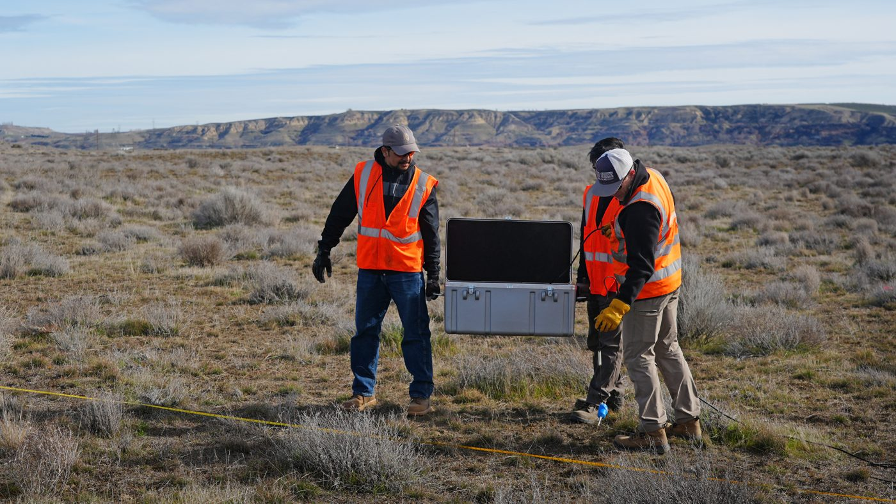
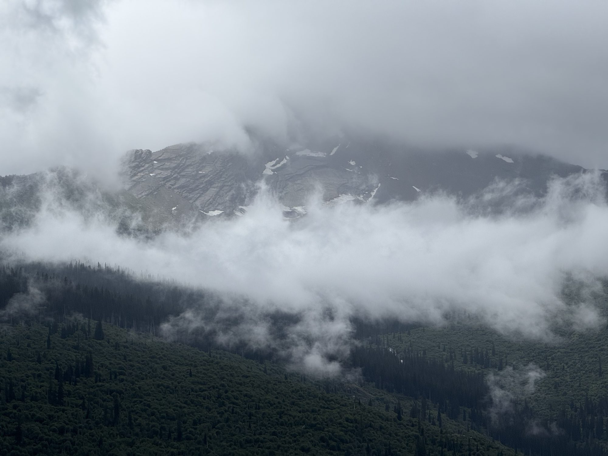
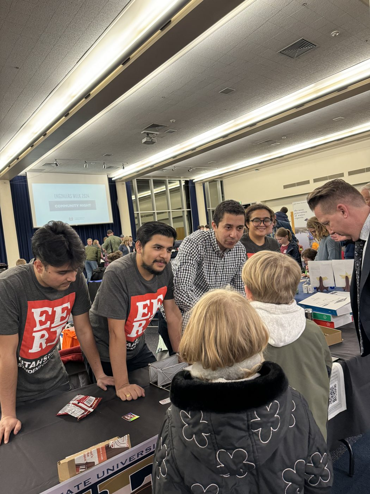
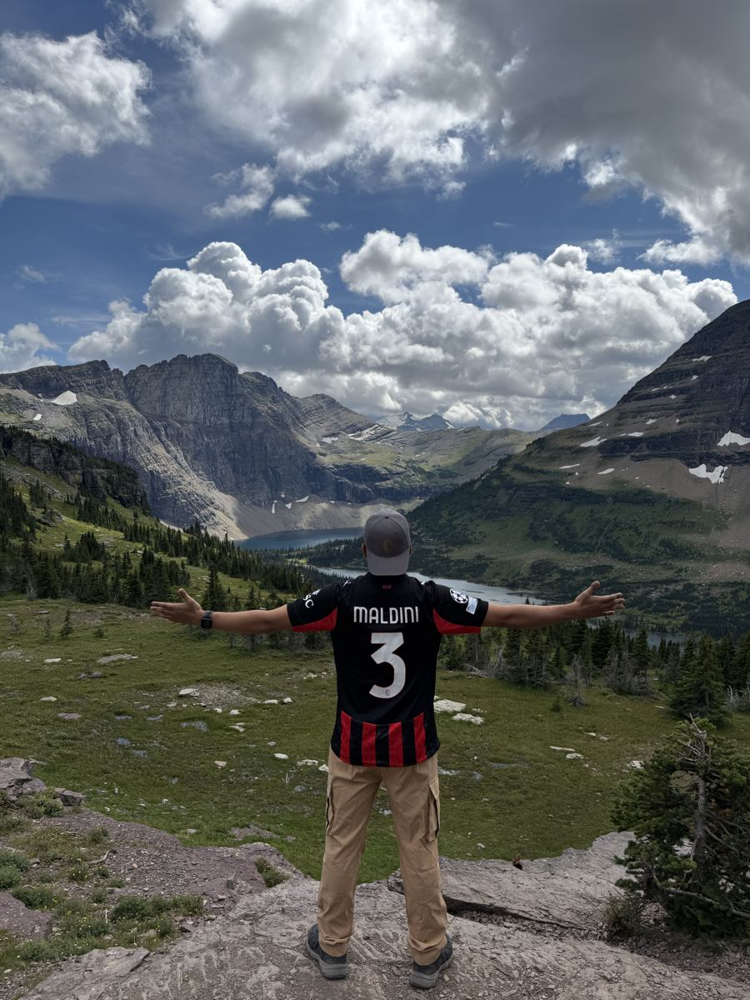

News
- Nov 10, 2026
I defended my Ph.D. dissertation! 🎓
Multi-Dimensional Site Response Analysis at Downhole Array Sites, advised by Dr. Brady R. Cox at Utah State University.
About me
I develop and calibrate large-scale 2D and 3D seismic site response models at instrumented downhole array sites, combining numerical modeling with field measurements to understand when one-dimensional assumptions break down.
My dissertation, Multi-Dimensional Site Response Analysis at Downhole Array Sites, is advised by Dr. Brady R. Cox. Alongside modeling in FLAC3D and Seismo-VLAB, I spend a lot of time in the field: deep shear-wave velocity profiling with MASW and MAM, spatially distributed HVSR, and distributed acoustic sensing (DAS).
Before Utah State, I earned my M.S. in Geotechnical Engineering (with distinction) and B.S. in Civil Engineering from Tribhuvan University in Nepal, and inspected post-earthquake reconstruction after the 2015 Gorkha earthquake.
Thanks for visiting!
nish

Deep Vs profiling at a nuclear power plant site in Washington T-Rex mobile shaker, Newberry, Florida
T-Rex mobile shaker, Newberry, Florida

Glacier National Park · captured by yours trulyResearch

Multi-dimensional site response at four downhole arrays
2D and 3D models at downhole arrays in Alaska, Utah and California. All research →
Recent papers
- Incident wave inclination and azimuth in multi-dimensional ground responseSoil Dynamics and Earthquake Engineering · 2026
- Insights on numerical damping formulations from calibrated 2D analysesEarthquake Spectra · 2026
- 3D ground response at the I-15 downhole arrayGeo-Congress 2026, Salt Lake City
- Two papers on small-strain damping and pseudo-3D Vs modelsICSMGE 2026, Vienna

Outreach with the USU EERI Student Chapter →
Numerical damping

Forza Milan at Hidden Lake → Delicate Arch, Arches National Park